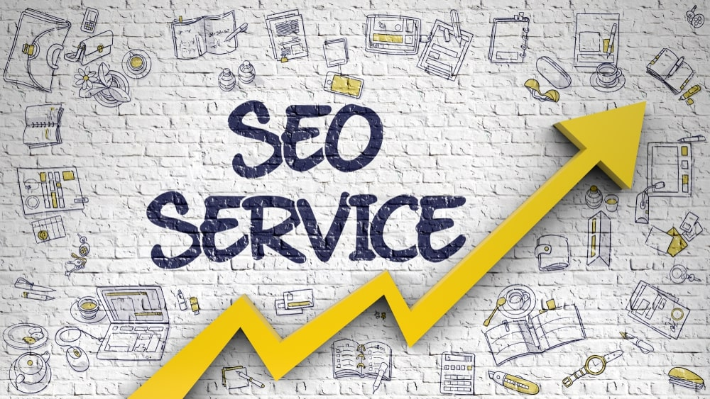
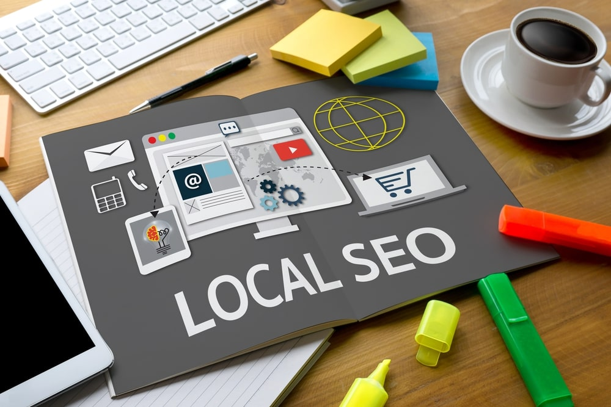

<!DOCTYPE html PUBLIC "-//W3C//DTD XHTML 1.0 Transitional//EN" "http://www.w3.org/TR/xhtml1/DTD/xhtml1-transitional.dtd"><html xmlns="http://www.w3.org/1999/xhtml"><head><meta http-equiv="content-type" content="text/html;charset=UTF-8">

<meta charset="UTF-8">
<meta http-equiv="Content-Type" content="text/html; charset=utf-8">
<meta http-equiv="X-UA-Compatible" content="IE=edge,chrome=1">
<meta name="viewport" content="width=device-width, initial-scale=1.0, maximum-scale=1.0, user-scalable=no">
<meta name="google-site-verification" content="MaU7baWWrEjrqG8OsqSctQTtkQ6ujhstreyK1d5gXkc">
<meta name="ahrefs-site-verification" content="12087e3ea5805ca83cac9aab62259e4f861670b2e94b42db700de7744028f4d4">
<meta name="yandex-verification" content="55a21d82a563a57b">
<meta name="twitter:card" value="summary">
<meta property="og:locale" content="en_US">
<meta property="og:title" content="Webzool | Winning Digital Solutions">
<meta property="og:description" content="Webzool is the #1 SEO company in Los Angeles.We have been providing SEO services for Los Angeles companies.">
<meta property="og:type" content="website">
<meta property="og:url" content="https://www.webzool.io/">
<meta property="og:site_name" content="Webzool Digital Agency">
<meta property="og:image" content="../static/images/og-image-01.png">
<title>Affordable Local SEO Services in Los Angeles</title>
<meta name="description" content="With the help of Los Angeles local SEO services, you will be able to track and measure your ranking, traffic, or conversion rates.">
<link rel="icon" type="image/png" href="../static/images/favicon.ico">
<link rel="stylesheet" href="../../stackpath.bootstrapcdn.com/bootstrap/4.1.3/css/bootstrap.min.css" crossorigin="anonymous">
<link rel="stylesheet" type="text/css" href="../static/css/slick.css">
<link rel="stylesheet" type="text/css" href="../static/css/slick-theme.css">
<link rel="stylesheet" type="text/css" href="../static/css/main.css" media="all">

<script src="../../www.googletagmanager.com/gtag/js" type="6cc9789f6d25f5efed8f766f-text/javascript"></script>

<script type="6cc9789f6d25f5efed8f766f-text/javascript">
		! function (f, b, e, v, n, t, s) {
			if (f.fbq) return;
			n = f.fbq = function () {
				n.callMethod ?
					n.callMethod.apply(n, arguments) : n.queue.push(arguments)
			};
			if (!f._fbq) f._fbq = n;
			n.push = n;
			n.loaded = !0;
			n.version = '2.0';
			n.queue = [];
			t = b.createElement(e);
			t.async = !0;
			t.src = v;
			s = b.getElementsByTagName(e)[0];
			s.parentNode.insertBefore(t, s)
		}(window, document, 'script',
			'https://connect.facebook.net/en_US/fbevents.js');
		fbq('init', '410331106460614');
		fbq('track', 'PageView');
	</script>
<noscript></noscript>


<script src="../../www.googletagmanager.com/gtag/js" type="6cc9789f6d25f5efed8f766f-text/javascript"></script>
<script type="6cc9789f6d25f5efed8f766f-text/javascript">
		window.dataLayer = window.dataLayer || [];

		function gtag() {
			dataLayer.push(arguments);
		}
		gtag('js', new Date());

		gtag('config', 'UA-143891312-1');
	</script>

<script type="6cc9789f6d25f5efed8f766f-text/javascript">
		(function (m, e, t, r, i, k, a) {
			m[i] = m[i] || function () {
				(m[i].a = m[i].a || []).push(arguments)
			};
			m[i].l = 1 * new Date();
			k = e.createElement(t), a = e.getElementsByTagName(t)[0], k.async = 1, k.src = r, a.parentNode.insertBefore(k,
				a)
		})
		(window, document, "script", "https://mc.yandex.ru/metrika/tag.js", "ym");

		ym(54457120, "init", {
			clickmap: true,
			trackLinks: true,
			accurateTrackBounce: true,
			webvisor: true
		});
	</script>
<noscript>
		<div></div>
	</noscript>


<script type="6cc9789f6d25f5efed8f766f-text/javascript">
		(function (w, d, s, l, i) {
			w[l] = w[l] || [];
			w[l].push({
				'gtm.start': new Date().getTime(),
				event: 'gtm.js'
			});
			var f = d.getElementsByTagName(s)[0],
				j = d.createElement(s),
				dl = l != 'dataLayer' ? '&l=' + l : '';
			j.async = true;
			j.src =
				'https://www.googletagmanager.com/gtm.js?id=' + i + dl;
			f.parentNode.insertBefore(j, f);
		})(window, document, 'script', 'dataLayer', 'GTM-KPDC95D');
	</script>


<noscript><iframe src="https://www.googletagmanager.com/ns.html?id=GTM-KPDC95D" height="0" width="0" style="display:none;visibility:hidden"></iframe></noscript>

<script type="6cc9789f6d25f5efed8f766f-text/javascript">
		gtag('config', 'AW-722911980/maqcCM7nmqgBEOyF29gC', {
			'phone_conversion_number': '(855)-681-0959'
		});
	</script>
</head>
<body>
<nav class="navbar navbar-expand-lg navbar-dark bg-tr" id="navbar">
<a class="navbar-brand" href="../index.html">
<span></span>

</a>
<button class="navbar-toggler collapsed" type="button" data-toggle="collapse" data-target="#navbarNav" aria-controls="navbarNav" aria-expanded="false" aria-label="Toggle navigation">
<span class="navbar-toggler-icon"></span>
</button>
<div class="collapse navbar-collapse" id="navbarNav">
<ul class="navbar-nav ml-auto">
<li class="nav-item">
<a class="nav-link" href="../index.html">Home</a>
</li>
<li class="nav-item dropdown">
<a class="nav-link" href="../index.html" id="navbarDropdown" role="button" data-toggle="dropdown" aria-haspopup="true" aria-expanded="false">
Services
</a>
<div class="dropdown-menu" aria-labelledby="navbarDropdown">
<a class="dropdown-item web" href="../web-design/index.html">Web Design & Development<span class="sub">Responsive Web Design Solutions</span></a>
<a class="dropdown-item digital" href="../seo/index.html">Search Engine Optimization<span class="sub">Enjoy the view from the top of the google search results.</span></a>
<a class="dropdown-item brand" href="../branding/index.html">Branding Identity & Graphic Design<span class="sub">Logo and Social Media Design</span></a>
<a class="dropdown-item pr" href="../pr/index.html">PR Services<span class="sub">Promotion Services</span></a>

</div>
</li>
<li class="nav-item">
<a class="nav-link" href="../about/index.html">About Us</a>
</li>
<li class="nav-item">
<a class="nav-link" href="../portfolio/index.html">Portfolio</a>
</li>

<li class="nav-item">
<a class="nav-link" href="../glossary/index.html">Glossary</a>
</li>
<li class="nav-item">
<a class="nav-link" href="../blogs/index.html">Blog</a>
</li>
<li class="nav-item">
<a class="nav-link" href="../contact/index.html">Contact Us</a>
</li>
</ul>
</div>
</nav>
<section class="blog-detail">
<div class="container">
<div class="row">
<div class="col-sm-12">
<div class="meta-box">
<div class="featured-image-box" style="background-image: url('/media/posts/2019/09/06/undraw_instat_analysis_ajld.svg');">
</div>
<h1>Affordable Local SEO Services in Los Angeles</h1>
<p class="blog-short">You can optimize your website by yourself or get help from a local SEO service. The benefit of outsourcing optimization is that these people have more expertise than you. The algorithm that search engines use is not easy to understand and follow. However, experienced professionals know how to change the website better.</p>
<p><span class="blog-author-and-date"><i>Samira Valiyeva</i></span></p>
<p><span>Jul.27,2019</span> Viewed <span></span></p>
<div class="sharethis-inline-share-buttons"></div>
</div>
</div>
</div>
</div>
</section>
<section class="blog-content">
<div class="container-fluid">
<div class="row">
<div class="col-md-3">
<div class="left-sidebar">
<div class="table-of-contents"></div>

</div>
</div>
<div class="col-md-6">
<div class="insidePage">
<article>
<div class="all-questions">
<p>Welcome to the new era of Marketing concept- Search Engine Optimization. It is a game-changing tool that will act as a magic flute. This magic will hypnotize even the unaware customers and bring them to you. The stage of marketing nowadays is different from previous periods like production, sales, or marketing, where you strived to make you visible to the audience. Now you put minimum effort to catch the attention of customers. SEO works like breadcrumbs, which lead clients to find your services or products. If you also want to benefit from this service, you can find some local SEO services in Los Angeles. However, you also need to put some effort to choose professional and affordable local SEO services. </p>
<p>After reading the article, you will have an in-depth understanding of SEO services. I ensure you will be thrilled about the benefits of the optimization. Hence, I will also lead you to the professional, reliable, and budget-friendly service provider. </p>
<h2>What is SEO?</h2>
<p>Though you have heard SEO is essential to businesses, it can get complicated if you have not used it yet. People usually confuse what an SEO company does and what is included in those services. Things get even more complicated if companies apply a language full of new terms to you. SEO- Search Engine Optimization improves the visibility of your business in online settings. An SEO company will make some changes in your<a href="../web-design-trends-2019/index.html"> website design</a> or content. As a result, your website will be more attractive for search engines like Google, Bing, Yahoo, etc. The more you optimize your site, the more your brand will appear on the first pages of search results. By using relevant keywords in<a href="https://www.forbes.com/sites/jaysondemers/2015/11/03/the-top-10-reasons-you-need-seo/#f09ec107f361/index.html"> SEO services</a>, you will also ensure that people searching for your offering will access to your website.</p>
<p>You can optimize your website by yourself or get help from a local SEO service. The benefit of outsourcing optimization is that these people have more expertise than you. The algorithm that search engines use is not easy to understand and follow. However, experienced professionals know how to change the website better, so that the algorithms put your brand on top rankings. Local SEO in Los Angeles will first check your site and develop a strategy suitable for your business. A reliable company like Webzool will provide a service to your website just like their own. They will perform any action required to make your business visible on the internet.</p>
<h2>Benefits of SEO Services </h2>
<p></p>
<p>Search Engine Optimization is not only a function for popping your website among high ranked ones. It has many other advantages like higher returns in the form of<a href="../conversion-optimization-small-business-website/index.html"> conversion optimization</a>, traffic, sales, brand awareness, etc. This service will act as a tool for monitoring, advertising, or even for analyzing your customer base. We guarantee that every penny spent for a Search Engine Optimization service will be worth.</p>
<h3>Website Layout</h3>
<p>Some people stick to one side of SEO, which is optimizing your website for the search engines. However, SEO is capable of much more. This tool makes your website user-friendly, which works fast and error-free. New clients get frustrated from the cluttered websites with weak structure. However, SEO makes your site look clean and guides the client through different pages. As a result, your bounce rate falls, and page views increase. For further information, the bounce rate is an indicator of the percentage of people who leave your website after viewing one page. The lower rate indicates your website is attractive for visitors. A well-structured site can show visitors exactly what they need. </p>
<p>As a result, local SEO services will not only make your brand visible on search engines. It also ensures your customers have a great user experience on your website by extensive<a href="../6-web-development-steps-design-website/index.html"> web development</a>. Like a never-ending cycle, as they stay longer on your website, your page becomes more visible in search results. Caring about the experience of visitors will have a return in the form of increased sales or search engine optimization of your website. </p>
<h3>High Return on Investment</h3>
<p>If you want to use SEO services, you should not view it as an expense to your business. More than being a cost, SEO service is a significant investment. It will be a wrong notion if we view SEO as costly. You should focus on its future returns. Different from traditional marketing, SEO brings measurable results. With the help of Los Angeles local SEO services, you will be able to track and measure your ranking, traffic, or conversion rates. </p>
<p>One of the reasons for viewing SEO as an investment is that it brings you a<a href="https://www.searchenginejournal.com/clients-who-pay-more-for-seo-services-report-higher-satisfaction-rates/315067/#close/index.html"> higher conversion rate</a> than any other marketing tool. As you can customize whom you want to target, your message is visible to potential customers. Optimized websites make it easy to navigate through the pages. Those websites are compatible with different types of browsers and devices. Besides, they load faster. Therefore, it is highly likely that a visitor will become aware of your product or service quickly. As a result, your conversion rate, which is the ratio of sales to visitor numbers, increases rapidly. </p>
<h3>Analytical Assistance </h3>
<p>The capabilities that SEO services are so vast that I get excited every time explaining its benefits. Imagine a tool that can help you market your business. Plus, it gives you detailed information about the behavior or characteristics of potential or current buyers. All you can dream for your business, including<a href="../which-produces-better-roi-digital-marketing/index.html"> digital marketing</a>, monitoring, reporting, and analytical tools- SEO joins all of them. </p>
<p>With the help of local SEO in Los Angeles, you can get a lot of information about the visitors. You can access the demographic information like gender or age of the visitors and clients. If you have an E-commerce website, you can find how much time the buyer spent, what they buy, or which keywords they use to search for your product. Even if you have a non-E-commerce website, you can still generate valuable information. For example, you can estimate lead conversions from the contact us page with the help of local SEO services. </p>
<h3>Brand Awareness</h3>
<p></p>
<p>Another great benefit of SEO is increasing the awareness of your company among customers. As a result, anyone searching for your product or service will instantly find your website. Appearing on the first page of search results also creates a positive brand image for your product. Besides, clients will associate your brand with the keywords used. Hence, local SEO services can manage to which keywords your website will appear. Moreover, customers will perceive your brand as a reliable one compared to others with a weak web presence.</p>
<p>Being among the first results causes a significant first impression. I know you think we should not judge a book by its cover, but believe me, many of us do. If you want to have a great brand, you should focus on its cover page, too. This idea has two implications. First, it is essential to appear on the first page of search results. Second, you should provide<a href="../building-responsive-web-design-for-your-company/index.html"> responsive web design</a> and valuable information to each page of your website. Whenever a customer visits any of your pages, he should be attracted by its features. </p>
<h3>Stand Out in Competition</h3>
<p>SEO is the key to win a marathon. If you watched one, you have seen how runners compete to become the first to reach the winning point. Business management looks like a marathon competition a lot. Every brand competes for the top and catching the attention of the customer first. If your competitor uses Los Angeles local SEO services, you should utilize the service, too. It is essential to keep up the competition. However, if they do not, then you should definitely do. Think about all the benefits of SEO, and you are the first beneficiary of the service. </p>
<p>The idea is, kill or be killed. Around 90% of the online journey starts with search engines like Google, Yahoo, Bing, etc. If you have an e-commerce business, you access even the enormous source of customers with the SEO. Almost 40% of customers of e-commerce come from the search. Now or in the future, if you do not use local SEO in Los Angeles, your business will not be surviving for a long time. Optimization is not a point of a difference anymore; it is a necessity to keep up the competition.</p>
<h3>Wide Customer Base</h3>
<p>When we discuss local SEO services, the instant benefit that comes to mind is access to a broader base of customers. Users say that traffic from the search engine is the most efficient one. This idea holds because those people are more likely to have a demand for your product or service. With traditional push advertising, you reached the potential customers. However, you need to persuade them to think about your offering or your brand. Unlike <a href="../digital-marketing-strategies-apps-2019/index.html">traditional marketing</a>, you use the pull method. You attract the visitors that have already felt a need for the offering. </p>
<p>From a technical point of view, SEO increases the attribution of your brand. Attribution is the number of times that visitors see the brand. The more frequently they contact your business, the more likely they will make a purchase. Some people think that if they do not sell online, SEO is not helpful. However, many customers research before they visit your store. Therefore, optimization also contributes to offline sales.</p>
<h2>Paid Advertising vs. Local SEO Services </h2>
<p></p>
<p>There are many ways that optimization supersedes<a href="https://www.searchenginejournal.com/7-expert-tips-to-boost-your-ppc-performance-today/321511/index.html"> paid advertising</a>. Though people enjoy searching online and make roughly 67 thousand searches only on Google, they do not like paid advertising. Whether it is on search results or webpages, around 80% of people ignore paid ads. The trust toward organic search results is most likely due to the confidence in the algorithm of Google. If you invest in affordable local SEO services, you can ensure that you appear on the first pages of organic search results. Therefore, people will prefer your brand to the ones that use paid advertising. </p>
<h3>24/7 Service</h3>
<p>You should not ignore the fact that local SEO services advertise your brand 24/7. Once you achieve high rankings, you do not quickly lose your place. Being one of the top search results will attract more customers. As more people click on your website, your rating will further increase. As you understand, if you achieve your high place on search results, you will automatically keep your place. </p>
<h3>Measurement</h3>
<p>Many business owners do not like investing in marketing. The main reason is that they can not know the effects of their advertising. As they cannot measure the impact, they hesitate to spend more. With local SEO in Los Angeles, it is not the case. You can estimate conversion, views, traffic, engagement, attribution, or other ratios which will give you a reliable estimation of impact. </p>
<h3>Cost</h3>
<p>You already understood that Los Angeles local SEO services are way more cost-effective. Based on recent estimations, the average cost per click of paid advertising is $2.3. With SEO, you do not pay for making your service visible. You can be on top results organically using the right content or keywords. Invest in SEO and rank high. Then you can stop any paid advertising and let SEO advertise your business. It will bring customers anytime. The only cost that you will make is outsourcing the service provider. Fortunately, you can easily access affordable local SEO services in Los Angeles- Webzool. </p>
<h2>Criteria for Affordable Local SEO Services</h2>
<p></p>
<p>It may be challenging to choose the right local SEO services. Some professional and reliable companies will do their best to bring your website to higher ranks. However, there are many of them which will try an easy way and may even damage your<a href="../brand-reputation-improvement-tactics-2019/index.html"> brand reputation</a>. If you decide to benefit from the optimization, there are some factors that you need to check before selecting a company. </p>
<h3>Experience</h3>
<p>One of the easiest ways to check the reliability of the company is looking at their previous clients. Analyze their case studies and testimonials to reveal how they helped other clients. After you get familiar with their offerings, go online. Check some of their current clients. If they rank high on search results, the SEO company is more likely to benefit you, too. </p>
<h3>Customization</h3>
<p>Another essential factor that you need to consider is customized strategies. You should know if the company develops SEO strategies specific to the clients. No two businesses are the same. Their needs, goals, characteristics, or the way how enterprises work are different. Therefore, a professional Los Angles SEO services will take some time to analyze your offerings and get familiar with your goals. Only after that, they should be able to create a successful strategy for targeting your customers.</p>
<h3>Affordability of Local SEO Services</h3>
<p>Before finding a reliable company, you should define your budget. You can contact several SEO companies and ask about their fees. Then you can compare the cost and expected services of each company. Your local SEO services work differently in terms of putting you among the top<a href="../key-steps-rise-top-search-results-google-search/index.html"> search results</a>. Some get fees per hour, and others sign a long-term contract. You should find a company that you can afford. Therefore, do not try to get the cheapest option. You always get what you pay for. Refer to your goals, needs, and decide what type of service you need. Price is an essential part of decision-making, thus spend some time on it before selecting a company.</p>
<h2>The Most Affordable Local SEO Service</h2>
<p>Lets be honest. Whether you select an employee or a company to provide a service, a decision-making process is challenging. It takes time and energy that otherwise could be used in a more meaningful activity. I do not say finding an SEO company is not a necessary action; I mean you do not need to waste resources on the process. Therefore, I offer you professional, affordable, and reliable local SEO services in Los Angeles. All the critical factors that need to be checked while selecting a company exist in Webzool. Webzool SEO services will start the process by auditing your website. </p>
<p><br>
The team applies technical and local<a href="../ultimate-guide-seo-audit-2019/index.html"> SEO audit</a> by using sophisticated tools like Ahrefs or SEM Rush. The range of Los Angeles local SEO services offered is vast. It includes crawling, indexing, detection of duplicate content, Canonicalization, etc. They do not only make your website error-free. They also create a website that is user-friendly and appears among the top results. This way, you ensure the increased traffic, conversion, and hence, revenue. What is more exciting is that all those services are provided at a reasonable price. No reason can stop you from choosing the services of Webzool.</p>
</div>
</article>
</div>
</div>
<div class="col-md-3" style="position: relative;">
<div class="right-sidebar">
<form action method="POST" class="side-form">
<h4>Contact Us for Free Consultation</h4>
<input type="hidden" name="csrfmiddlewaretoken" value="zN9aXvS3UvUWfIfgsLVZ7QKvwqcmDLbzCDPAjyebc5TVqN6XvnSspNZOUgj7m9vB">
<input id="first_name" type="text" name="first_name" class="first_name" required="required" placeholder="First Name">
<input id="last_name" type="text" name="last_name" class="last_name" required="required" placeholder="Last Name">
<input id="email" type="email" name="email" class="email" required="required" placeholder="Email">
<input id="phone_number" type="phone" name="phone_number" class="phone" required="required" placeholder="Phone">
<input class="form-btn-green" type="submit" value="submit">
</form>

</div>
</div>
</div>
</div>
</section>
<section class="comment">
<div class="container">
<div class="comment-box">
<div id="disqus_thread"></div>
<script type="6cc9789f6d25f5efed8f766f-text/javascript" src="../../webzool.disqus.com/embed.js"></script>
<noscript>
                <p><a href="http://webzool.disqus.com/?url=ref">View the discussion thread.</a></p>
            </noscript>
<p><a href="https://disqus.com/index.html" class="dsq-brlink">blog comments powered by <span class="logo-disqus">Disqus</span></a></p>
</div>
</div>
</section>
<section class="blog-form-box">
<div class="container">
<div class="call-form-box">
<form method="POST" id="mailchimpform">
<input type="hidden" name="csrfmiddlewaretoken" value="zN9aXvS3UvUWfIfgsLVZ7QKvwqcmDLbzCDPAjyebc5TVqN6XvnSspNZOUgj7m9vB">
<div class="row">
<div class="col-md-8">
<input id="email" type="email" name="email" class="form-field" placeholder="Enter Your E-mail">
</div>
<div class="col-md-4">
<input type="submit" id="email_submit" class="form-btn full-width-btn" style="margin-top: 0px;" value="Get Free eBook">
</div>
</div>
</form>
</div>
</div>
</section>
<section class="related-posts">
<div class="section-title text-center">
<h1>Hand-picked related articles</h1>
</div>
<div class="container">
<div class="row">
<div class="col-md-4">
<div class="blog-item">
<a href="../marketers-choice-real-time-marketing/index.html" class="blog-image">
<div class="image" style="background-image: url('/media/posts/2019/09/06/marketer.svg');"></div>
</a>
<div class="blog-content">
<h2 class="blog-title">Marketer's new choice: Benefits of Real-Time Marketing for your small business in nowadays</h2>
<p class="blog-desc">Real-time marketing has become more demanding than ever in expanding our business. Real-time marketing is not the traditional way of marketing. However, it is not a complicated method, and you need to be always available for trends and new information.</p>
</div>
<div class="blog-footer">
<div class="col-sm-8" style="padding: 0px;">
<p class="author"><i class="far fa-user-circle"></i>Shahin Shakarli</p>
</div>
<div class="col-sm-4" style="padding: 0px;">
<p class="date"><i class="far fa-calendar"></i>Feb. 25, 2019</p>
</div>
</div>
</div>
</div>
<div class="col-md-4">
<div class="blog-item">
<a href="../digital-marketing-traditional-marketing/index.html" class="blog-image">
<div class="image" style="background-image: url('/media/posts/2019/09/06/d-v.svg');"></div>
</a>
<div class="blog-content">
<h2 class="blog-title">Digital Marketing vs Traditional Marketing</h2>
<p class="blog-desc">You might get stuck right at the start because there is a question every entrepreneur faces. Which marketing strategy should you choose: traditional or digital marketing? Should you choose digital marketing so you can reach to the online audience and increase cost-effectiveness? Or should you instead go for the proven traditional marketing strategies?</p>
</div>
<div class="blog-footer">
<div class="col-sm-8" style="padding: 0px;">
<p class="author"><i class="far fa-user-circle"></i>Aziz Hamidov</p>
</div>
<div class="col-sm-4" style="padding: 0px;">
<p class="date"><i class="far fa-calendar"></i>Mar. 04, 2019</p>
</div>
</div>
</div>
</div>
<div class="col-md-4">
<div class="blog-item">
<a href="../which-produces-better-roi-digital-marketing/index.html" class="blog-image">
<div class="image" style="background-image: url('/media/posts/2019/09/06/roi.svg');"></div>
</a>
<div class="blog-content">
<h2 class="blog-title">Which produces better ROI? Digital marketing vs Traditional marketing</h2>
<p class="blog-desc">It is important to budget for marketing purposes and spends it properly. How can you determine to spend this budget if you are torn between digital marketing vs. traditional marketing?</p>
</div>
<div class="blog-footer">
<div class="col-sm-8" style="padding: 0px;">
<p class="author"><i class="far fa-user-circle"></i>Ravan Allahverdiyev</p>
</div>
<div class="col-sm-4" style="padding: 0px;">
<p class="date"><i class="far fa-calendar"></i>Apr. 03, 2019</p>
</div>
</div>
</div>
</div>
</div>
</div>
</section>
<script type="6cc9789f6d25f5efed8f766f-text/javascript" src="../static/js/jquery-2.1.1.min.js"></script>
<script src="../../platform-api.sharethis.com/js/sharethis.js" type="6cc9789f6d25f5efed8f766f-text/javascript">
</script>
<script type="6cc9789f6d25f5efed8f766f-text/javascript">
    $(window).scroll(function () {
        $(window).scrollTop() >= 100 ? ($("nav").addClass("fixed-header"), $("nav a span").addClass(
            "visible-title")) : ($("nav").removeClass("fixed-header"), $("nav a span").removeClass(
            "visible-title"))
    }), $(document).on("click", ".dropdown-menu", function (e) {
        e.stopPropagation()
    }), $(window).scroll(function () {
        $(window).scrollTop() >= 500 ? $(".right-sidebar").addClass("fixed-b") : $(".right-sidebar")
            .removeClass("fixed-b")
    }), $(window).scroll(function () {
        $(window).scrollTop() >= 500 ? $(".left-sidebar").addClass("fixed-toc") : $(".left-sidebar")
            .removeClass("fixed-toc")
    });
    var el, title, link, toc = $("<ul></ul>").addClass("toc");
    $(".all-questions h3").each(function () {
        var e = $(this).text().replace(/[^a-zA-Z0-9 ]/g, "").replace(/\s/g, "-").toLowerCase();
        $(this).attr("id", e), el = $(this), title = el.text(), link = "#" + el.attr("id"), newLine =
            "<li><a href='" + link + "'>" + title + "</a></li>", toc.append(newLine)
    }), toc.prepend("<h4>Table Of Contents:</h4>"), $(".table-of-contents").prepend(toc), toc.find("a").on("click",
        function () {
            var e = $(this).attr("href");
            return $("html, body").animate({
                scrollTop: $(e).offset().top
            }, 500), !1
        });
</script>
<footer id="footer" class="footer">
<div class="container">
<div class="row">
<div class="col-md-2">
<div class="footer-box">
<h4 class="footer-title">Useful Links</h4>
<ul class="footer-nav">
<li><a href="../index.html">Home</a></li>
<li><a href="../about/index.html">About Us</a></li>
<li><a href="../portfolio/index.html">Portfolio</a></li>

<li><a href="../glossary/index.html">Glossary</a></li>
<li><a href="../blogs/index.html">Blog</a></li>
<li><a href="../contact/index.html">Contact Us</a></li>
</ul>
</div>
</div>
<div class="col-md-3">
<div class="footer-box">
<h4 class="footer-title">Our Services</h4>
 <ul class="footer-nav">
<li><a href="../web-design/index.html">Web Design & Development</a></li>
<li><a href="../digital-marketing/index.html">Digital Marketing</a></li>
<li><a href="../branding/index.html">Branding Identity & Graphic Design</a></li>
<li><a href="../pr/index.html">PR Services</a></li>
<li><a href="../seo/index.html">SEO Audit</a></li>
</ul>
</div>
</div>
<div class="col-md-4">
<div class="footer-box">
<h4 class="footer-title">Latest Posts</h4>
<ul class="footer-nav">
<li><a href="../how-to-do-mobile-seo-in-2019-7-step-optimization/index.html">How to do mobile SEO in 2019: 7-step optimization guide</a>
</li>
<li><a href="../the-best-seo-strategy-you-need-in-2019/index.html">The Best SEO Strategy You Need in 2019</a>
</li>
<li><a href="../medical-seo-9-ways-to-get-a-top-google-ranking/index.html">Medical SEO: 9 Ways to Get a Top Google Ranking for Your Medical Website</a>
</li>
<li><a href="../local-organic-professional-seo-consultant/index.html">Local & Organic Professional SEO Consultant Los Angeles, California</a>
</li>
<li><a href="../seo-copywriting-tips-secrets-strategies-in-2019/index.html">SEO Copywriting Tips, Secrets, and Strategies in 2019</a>
</li>
</ul>
</div>
</div>
<div class="col-md-3">
<div class="footer-box">
<h4 class="footer-title">Contact Us</h4>
<ul class="footer-nav">
<li><i class="fas fa-phone-volume"></i><a>+1 (855)-681-0959</a></li>
<li><i class="far fa-envelope-open"></i><a><span class="__cf_email__" data-cfemail="2e5d4f424b5d6e594b4c54414142004d4143">[email protected]</span></a></li>
</ul>
<h4 class="footer-title">Follow Us</h4>
<ul class="footer-social">
<li><a href="https://www.facebook.com/webzool/index.html"></a></li>
<li><a href="https://www.instagram.com/webzooldigital/index.html"></a>
</li>
<li><a href="https://www.linkedin.com/company/webzool/about/index.html"></a></li>
<li>
<a href="https://twitter.com/Webzool6/index.html">

</a>
</li>
</ul>
</div>
</div>
</div>
</div>
</footer>
<div class="footer-bottom">
<div class="container">
<div class="row">
<div class="col-md-4">
<div class="pt"><a href="../privacy-policy/index.html">Privacy Policy</a> and <a href="../terms/index.html">Terms Of Use</a></div>
</div>
<div class="col-md-4">

</div>
<div class="col-md-4">
<div class="copyright">
All rights Reserved by Webzool  ©
</div>
</div>
</div>
</div>
</div>
<script data-cfasync="false" src="../cdn-cgi/scripts/5c5dd728/cloudflare-static/email-decode.min.js"></script><script src="../../stackpath.bootstrapcdn.com/bootstrap/4.2.1/js/bootstrap.min.js" crossorigin="anonymous" type="6cc9789f6d25f5efed8f766f-text/javascript">
	</script>
<script type="6cc9789f6d25f5efed8f766f-application/javascript">
		var piioData = {
			appKey: 'jxkoid',
			domain: 'https://webzool.io',
			lazyLoadingDistance: 'small',
			disableWebP: true
		}
	</script>
<script src="../../js.piio.co/jxkoid/piio.min.js" type="6cc9789f6d25f5efed8f766f-text/javascript"></script>
<script src="../../ajax.cloudflare.com/cdn-cgi/scripts/95c75768/cloudflare-static/rocket-loader.min.js" data-cf-settings="6cc9789f6d25f5efed8f766f-|49" defer></script>
</body></html>